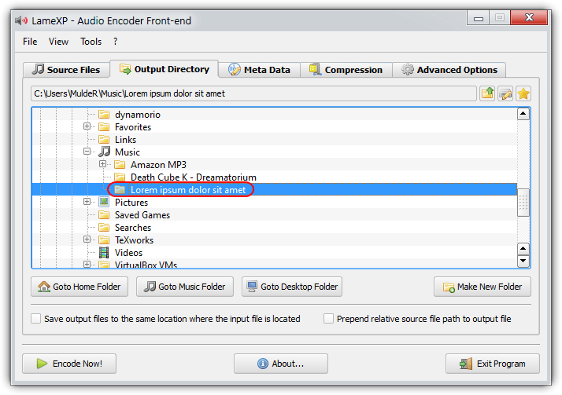

LameXP is a graphical user-interface (front-end) for various of audio encoders: It allows you convert your audio files from one audio format to another one in the most simple way. Despite its name, LameXP is NOT only a front-end for the LAME encoder, but supports a wide range of output formats, including MP3, Ogg Vorbis, AAC/MP4, FLAC, AC-3 and Wave Audio. The number of supported input formats is even bigger! Furthermore LameXP does NOT only run on Windows XP, but also on Windows Vista, Windows 7 and many other operating systems.
As all the encoders and decoders used by LameXP are already "built-in" (with one exception), you do NOT need to install any additional software, such as "Codecs", "Filters" or "Plug-ins", on your computer. Everything works "out of the box"! You can even use LameXP as a "portable" application, e.g. run it from your USB stick. Moreover LameXP was designed for batch processing. This means that you can convert a huge number of audio files, e.g. a complete album or even your entire music collection, in a single step. And, as LameXP is able to process several audio files in parallel, it takes full advantage of modern multi-core processors! However LameXP is NOT only optimized for speed, it also provides excellent sound quality by using the most sophisticated encoders available and by giving the user unrestricted control over all encoding parameters. In addition to that, LameXP provides full support for metadata, including cover art. So when converting your audio files, LameXP will retain existing meta tags. But there also is an easy-to-use editor for adding or modifying metadata. LameXP supports Unicode for both, meta tags and filenames, so there won't be any problems with "foreign" characters. And, thanks to our translators, the user-interface of LameXP is available in multiple languages. Last but not least, LameXP supports a number of post-processing filters, including sample rate conversion, normalization (gain), tone adjustment and downmixing of multi-channel sources.
Tier #1: LameXP is currently being developed on the following platforms:
Tier #2: The following platforms should work too, but aren't tested extensively:
Legacy: The following platforms are NOT actively supported any longer:
Â
Remarks: Windows XP has reached "end of life" on April 8th, 2014. This means that Microsoft has stopped all support for Windows XP, i.e. no updates or bugfixes are made available to regular Windows XP uses since that date, not even security fixes! Thus, all the security vulnerabilities that have been discovered after this deadline - and all the security vulnerabilities that will be discovered in the future - are going remain unfixed forever! Consequently, using Windows XP has become a severe security risk, and the situation is only going to get worse. While LameXP will continue to support Windows XP (note that Service Pack 3 is required!) for the foreseeable future, we highly recommend everybody to update to a less antiquated system now. Windows XP support will be discontinued in a future version, when most users have migrated to a contemporary system.
Currently the following output formats (audio encoders) are supported by LameXP:
Currently the following input formats (audio decoders) are supported by LameXP:
The LameXP software was developed, from the scratch, by LoRd_MuldeR . Consequently, all copyrights on the LameXP software exclusively belong to LoRd_MuldeR. The right to use, modify and redistribute the LameXP software according to the license terms is granted to everybody. Please see below for license details! If you want to use the LameXP software in a way that is not covered by the license terms, e.g. if you want to include the LameXP software (or parts of it) in a proprietary software, written permission by LoRd_MuldeR is required.
More OpenSource projects by LoRd_MuldeR can be found at http://muldersoft.com/ and https://github.com/lordmulder. Please do not send e-mail to LoRd_MuldeR directly, if the problem or suggestion can be discussed on the support forums or on the issue tracker!
It has to be noticed that LameXP uses a number of third-party applications and libraries. The copyright on these third-party tools belongs to the individual authors. All third-party tools that are included in the official distribution packages of LameXP are distributed in accordance with the respective software license. For legal reasons, some of the third-party tools can not be redistributed along with LameXP and therefore need to be obtained separately. For more details on the third-party tools that are used by the LameXP software, please refer to the "Third-party software" tab in the "About" dialogue. Moreover, various people have contributed translations to the LameXP project. These translation are redistributed with permission of the respective contributor. For more information about our contributors, please refer to the "Contributors" tab in the "About" dialogue.
LameXP is free software, released under the terms of the GNU General Public License (GPL), version 2. The licenses for most software and other practical works are designed to take away your freedom to share and change the works. In contrast, the GPL is designed to guarantee your freedom to share and change all versions of the software. In other words, the GPL ensures that free software will remain free for all of its users. LameXP adds some additional terms in order to keep your computer safe from unwanted software. See the GNU General Public License for more details!
LameXP - Audio Encoder Front-End
Copyright (C) 2004-2014 LoRd_MuldeR <MuldeR2@GMX.de>
This program is free software; you can redistribute it and/or
modify it under the terms of the GNU General Public License
as published by the Free Software Foundation; either version 2
of the License, or (at your option) any later version.
This program is distributed in the hope that it will be useful,
but WITHOUT ANY WARRANTY; without even the implied warranty of
MERCHANTABILITY or FITNESS FOR A PARTICULAR PURPOSE. See the
GNU General Public License for more details.
You should have received a copy of the GNU General Public License
along with this program; if not, write to the Free Software
Foundation, Inc., 51 Franklin Street, Fifth Floor, Boston, MA 02110-1301, USA.Â
Addendum: When distributing binaries of the LameXP software, it is strictly forbidden to bundle the LameXP program files and/or the LameXP installation program with any kind of Adware, Spyware or PUP (potentially unwanted program), including, but not limited to, any downloaders, dialers, browser toolbars/extensions or restricted shareware/demo programs. It is, however, perfectly legitimate to bundle LameXP with other OpenSource programs, according to the OSI (Open Source Initiative). Finally, it is also legitimate to bundle LameXP with commercial software, as long as that software does not meet the criteria of Adware, Spyware or PUP. If you bundle the LameXP software with another software, you are required to make sure that the user is provided with an easy way to install and start the LameXP software separately from that other software.
This tutorial will teach you, step by step, how to convert your audio files using the LameXP software.
First of all, you need to add all source files that you want to convert. So switch to the "Source Files" tab, just in case that tab is not active already, and click the "Add File(s)" button.

Â
This will bring up a standard file selection dialogue. Now simply select the files that you want to add and click the "Open" button. You can repeat this step multiple, e.g. to add files from different directories.

Â
All files you have added, so far, will show up in the list. You can click the "Remove" button to remove a single file from the list or "Clear" to remove them all. Click the "Show details" button to show details about a file.

Â
Did you know? Files can also be added via Drag & Drop. Just grab the files that you want to add in your Explorer window and drop them onto the LameXP main window (or onto the LameXP "dropbox" widget).
Next, you need to choose the output directory, i.e. the directory where the converted files will be saved. Switch to the "Output Directory" tab and choose the desired output directory from the directory tree view.
Note: There are several quick navigation buttons below, which will allow you to jump quickly to your personal "Home" folder, "Desktop" folder and "Music" folder, respectively.

Â
Sometimes you may wish to store the converted files in a new (sub-)folder. In this case, simply click the "Make New Folder" button, enter the desired folder name and hit the "OK" button.

Â
The new folder is going to be created inside the current directory and will be selected automatically. You can repeat this step multiple times in order to created nested sub-folders.

Â
Did you know? If you enable the "Save output files in the same directory where the input file is located", each output file will be saved to the same location where the corresponding source file resides.
Before you report any problems that you may have encountered with the LameXP software, please make sure that the problem can be reproduced with the latest release version of LameXP!
The latest official release of the LameXP software can be obtained from one of the following official download mirrors:
Â
It is highly recommended to download LameXP only from one of the official mirrors listed above. We assume no responsibility for the integrity and trustworthiness of LameXP downloads you may have received from other locations!
The recommended way to submit bug reports or feature requests to the LameXP developers is using the issue tracking system at our GitHub project site:
Â
Note: In order to use the issue tracking system, you need to log in with your GitHub account. Creating a GitHub account is easy and completely free of charge, simply click here!
If you want to discuss the development of the LameXP software, help other users or receive help from other users, please use the LameXP thread at Doom9's Forum:
Â
Note: Due to the massive amount of spam attacks, Doom9 has established strict anti-spam measures. Therefore, it takes a few days until your account will be approved.
While LameXP originally was written in Delphi/Pascal, the current version 4 series of the software has been re-written in the C++ programming language. LameXP v4 uses the Qt cross-platform application framework and provides full Unicode support. Furthermore, LameXP is tightly coupled with the MUtilities library, a vast collection of "utility" routines and classes to extend the Qt framework. Build files are currently provided for Microsoft Visual Studio only. Linux support is currently provided via Wine; a native Linux port of LameXP is planned for a future version.
The source code of the LameXP software is managed using Git version control system. The repository can be cloned from one of the official Git mirrors:
git clone git://git.code.sf.net/p/lamexp/code lamexp-src (Browse)
git clone https://github.com/lordmulder/LameXP.git lamexp-src (Browse)
git clone https://git01.codeplex.com/lamexp lamexp-src (Browse)
git clone https://bitbucket.org/lord_mulder/lamexp.git lamexp-src (Browse)
git clone git://git.assembla.com/lamexp.git lamexp-src (Browse)
git clone git://gitorious.org/lamexp/lamexp.git lamexp-src (Browse)
git clone git://repo.or.cz/LameXP.git lamexp-src (Browse)
Â
The source code of the MUtilities library is managed using Git version control system. The repository can be cloned from one of the official Git mirrors:
git clone git://git.code.sf.net/p/mutilities/code mutilities-src (Browse)
git clone https://github.com/lordmulder/MUtilities.git mutilities-src (Browse)
git clone https://git01.codeplex.com/mutilities mutilities-src (Browse)
git clone https://bitbucket.org/lord_mulder/mutilities.git mutilities-src (Browse)
git clone git://git.assembla.com/mutilities.git mutilities-src (Browse)
git clone git://gitorious.org/mutilities/mutilities.git mutilities-src (Browse)
git clone git://repo.or.cz/MUtilities.git mutilities-src (Browse)
Â
Remarks: In case you are new to Git or want to extend your knowledge, have a look at the Pro Git book by Scott Chacon! For Windows users, we highly recommend using MSYS Git in conjunction with the superb Tortoise Git front-end.
LameXP is currently being developed and built using the following development tools and libraries:
Visual Studio 2013 Update-4, running on Windows 7 with Service Pack 1
Qt libraries 4.8.6 for Windows (pre-compiled Qt libraries for Visual Studio 2013 can be found here)
Windows Platform SDK v7.1A, included with Visual Studio 2013 or Visual Studio 2012
The minimum supported build platform is Windows 7 (x86 and x64)
Â
In order to create LameXP release packages, using the included deployment scripts, you need the following additional tools:
7-Zip – file archiver with a high compression ratio
NSIS – Nullsoft Scriptable Install System (Unicode version recommended!)
UPX – the Ultimate Packer for eXecutables
Pandoc – the Universal Document Converter
GnuPG – the GNU Privacy Guard v1.4.x
In order to create a "fully static" build of LameXP, i.e. a build that does not depend on any "external" DLL files (except for the obligatory operating system DLL's that you cannot get around), you'll need to compile Qt as "static" libraries. The official Qt web-site does provide pre-compiled Qt libraries. However, they only provide DLL versions, they do not provide "static" libraries. Consequently, you need to build the required "static" Qt libraries yourself. The following simple instructions should make it easy to build Qt from the sources and as "static" libraries:
Make sure Visual Studio 2013 with Update-4 (or later) is installed
Make sure Strawberry Perl for Windows and Python 2.7 are installed
Download and extract the Qt 4.8.x source code package (e.g. to C:\QtSources\4.8.x)
Edit the file mkspecs\win32-msvc2010\qmake.conf from your Qt Sources directory as follows:
Old: QMAKE_CFLAGS_RELEASE = -O2 -MDNew: QMAKE_CFLAGS_RELEASE = -O2 -MT <more optimization flags here>Old: QMAKE_CFLAGS_RELEASE_WITH_DEBUGINFO += -O2 -MD -ZiNew: QMAKE_CFLAGS_RELEASE_WITH_DEBUGINFO += -O2 -MT -Zi <more optimization flags here>Open a new command window (cmd.exe) – use this very same console for all upcoming steps!
Add Strawberry Perl to your PATH (e.g. set PATH=C:\strawberry\perl\bin;%PATH%)
Add Python 2.7 to your PATH (e.g. set PATH=C:\python27;%PATH%)
Run vcvarsall.bat x86 form your Visual C++ install directory - within the same console!
Change the current directory to the Qt Sources path (e.g. C:\QtSources\4.8.x)
Run configure.exe -release -static -ltcg -qt-zlib -qt-libpng -qt-libjpeg -qt-libtiff -qt-libmng
-platform win32-msvc2012 tooNow the makefiles should have been generated, so simply enter nmake /B and be patient - voilà !
The build process is going to take good amount of time. Once it is done, make sure you got all needed libs:
lib\qtmain.liblib\QtCore.liblib\QtGui.liblib\QtSvg.liblib\QtXml.libplugins\imageformats\qico.libplugins\imageformats\qsvg.libplugins\imageformats\qtga.libPut all the static *.lib files into the Prerequisites\qt4_static\lib directory
ImageFormat plugins go to Prerequisites\qt4_static\plugins\imageformats
Congratulations, you should now be prepared to build the Release_Static configuration of LameXP 😊
Â
Note: Static libraries only work with the exactly same compiler (version) they were built with!
TODO
eof